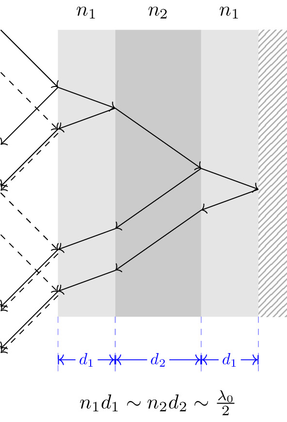

pre.tex
\documentclass[tikz]{standalone}\input{pre.tex}\begin{document}\begin{tikzpicture}
\xdef\darkness{0}
\xdef\opa{0.2}
\xdef\SIZE{6}
\xdef\setka{0}
\input{setka}
\draw[fill=gray!25, draw=none] (2,1) rectangle (3,6);
\draw[fill=gray!50, draw=none] (3,1) rectangle (4.5,6);
\draw[fill=gray!25, draw=none, xshift=2.5cm] (2,1) rectangle (3,6);
\draw [interface] (5.5,1) rectangle ++(0.5,5);
\def\iangle{20}
\def\angle{35}
\draw[light,dashed, yshift=0.26cm,->-=0.5]
(1,5) --
(2,4);
\draw[light,dashed, yshift=0.20cm,->-=0.5]
(2,4) -- ++ (-1,-1)
;
\begin{scope}[yshift=-2.1cm]
\draw[light,dashed, yshift=0.26cm,->-=0.5]
(1,5) --
(2,4);
\draw[light,dashed, yshift=0.20cm,->-=0.5]
(2,4) -- ++ (-1,-1)
;
\end{scope}
\begin{scope}[yshift=-2.83cm]
\draw[light,dashed, yshift=0.26cm,->-=0.5]
(1,5) --
(2,4);
\draw[light,dashed, yshift=0.20cm,->-=0.5]
(2,4) -- ++ (-1,-1)
;
\end{scope}
\draw[light, yshift=1cm,->-=0.5]
(1,5) --
(2,4) coordinate (A*);
\draw[light, ->-=0.5, yshift=1cm]
(A*) --
++(-\iangle:{1/cos(\iangle)}) coordinate (A);
\draw[light, ->-=0.5, yshift=1cm]
(A) --
++(-\angle:{1.5/cos(\angle)}) coordinate (C);
\draw[light, ->-=0.5, yshift=1cm]
(A) --
++(180+\iangle:{1/cos(\iangle)}) coordinate (B);
\draw[light, ->-=0.5, yshift=1cm]
(B) --
++(180+45:{sqrt(2)});
\draw[light,->-=0.5, yshift=1cm]
(C) --
++(180+\angle:{1.5/cos(\angle)}) coordinate (*) ;
\draw[light,->-=0.5, yshift=1cm]
(*)--
++(180+\iangle:{1/cos(\iangle)}) coordinate (**)
;
\draw[light,->-=0.5, yshift=1cm]
(**)--++(180+45:{sqrt(2)})
;
\draw[light,->-=0.5, yshift=1cm]
(A*) --
++(180+45:{sqrt(2)})
%
;
\draw[light,->-=0.5, yshift=1cm]
(C) --
++(-\iangle:{1/cos(\iangle)}) coordinate (A);
;\draw[light,->-=0.5, yshift=1cm]
(A)
--
++(180+\iangle:{1/cos(\iangle)}) coordinate (*)
;\draw[light,->-=0.5, yshift=1cm]
(*)--
++(180+\angle:{1.5/cos(\angle)}) coordinate (**)
;\draw[light,->-=0.5, yshift=1cm]
(**)--
++(180+\iangle:{1/cos(\iangle)}) coordinate (***)
;\draw[light,->-=0.5, yshift=1cm]
(***) --
++(180+45:{sqrt(2)})
;
\begin{scope}[yshift=0.8cm]
\draw[] (2.5,5.5) node [align=center] {$n_1$};
\draw[] ({(3+4.5)/2},5.5) node [align=center] {$n_2$};
\draw[] (5,5.5) node [align=center] {$n_1$};
\end{scope}
\begin{scope}[yshift=1cm]
\begin{scope}[xshift=2cm]
\lineann[-1]{0}{1}{$d_1$}{white}%gray!25}
\end{scope}
\begin{scope}[xshift=3cm]
\lineann[-1]{0}{1.5}{$d_2$}{white}%gray!50}
\end{scope}
\begin{scope}[xshift=4.5cm]
\lineann[-1]{0}{1}{$d_1$}{white}%gray!25}
\end{scope}
\end{scope}
\draw[] ({(3+4.5)/2},-.5) node [align=center] {$n_1d_1 \sim n_2d_2\sim \frac{\lambda_0}{2}$};
\end{tikzpicture}\end{document}